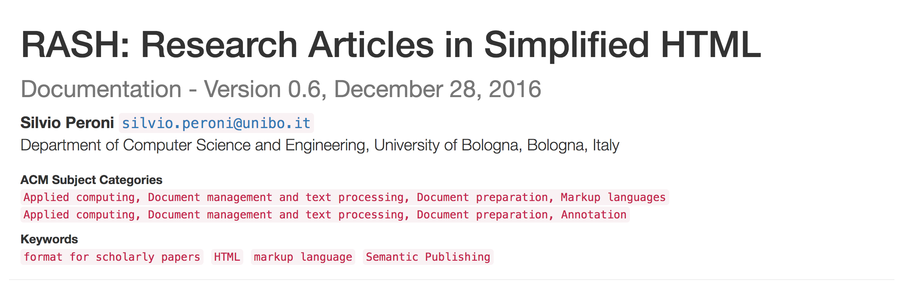
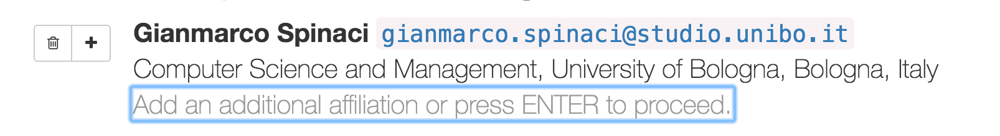
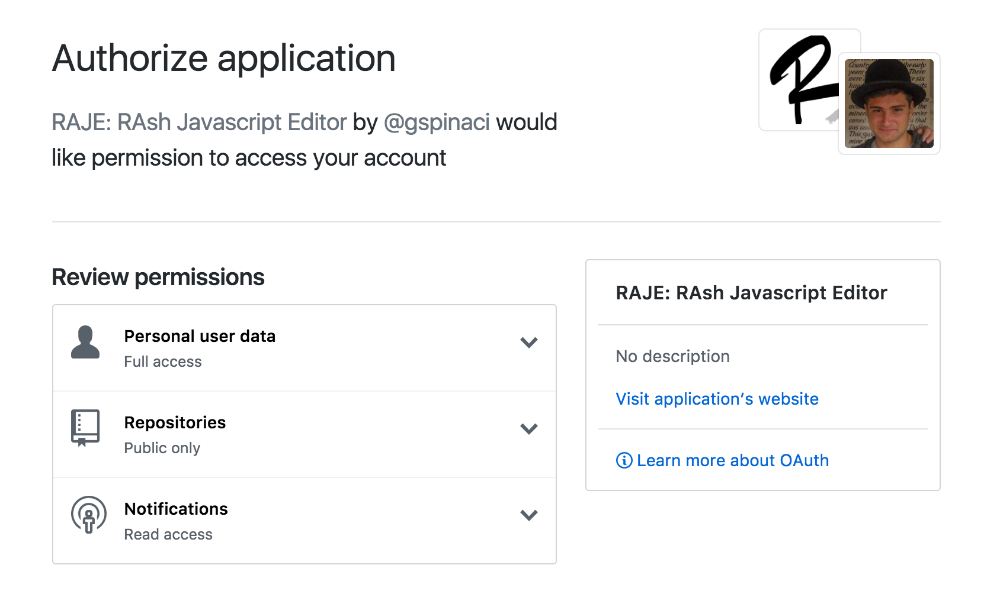

The RASH Javascript Editor
In this section we provide a brief introduction about RASH and its Framework, and then we discuss the RASH Javascript Editor (RAJE) by preseting its features and by discussing some details about its implementation.
The RASH Framework
The Research Articles in Simplified HTML (RASH) format is a markup language that restricts the use of HTML elements to only 32 elements for writing academic research articles. It allows authors to add RDF statements to the document by means of the element script with the attribute type set to application/rdf+xml
, text/turtle
or to application/ld+json
. In addition, RASH strictly follows the Digital Publishing WAI-ARIA Module 1.0 for expressing structural semantics on various markup elements used.
A RASH document begins as a simple (X)HTML5 document, by specifying the generic HTML DOCTYPE followed by the document element html with the usual namespace http://www.w3.org/1999/xhtml
specified. The element html contains the element head for defining metadata of the document according to the DCTERMS and PRISM standards, and the element body for including the whole content of the document. On the one hand, the element head of a RASH document must/should include some information about the paper, i.e., the paper title (element title), at least one author and other related information (i.e., affiliations, keywords, categories, by using the elements meta and link). On the other hand, the element body mainly contains textual elements (e.g., paragraphs, emphases, links, and quotations) for describing the content of the paper, and other structural elements (e.g., abstract, sections, references, and footnotes) used to organised the paper in appropriate blocks and to present specific complex structures (e.g., figures, formulas, and tables).
RASH is accompanied by its Framework, which is a set of specifications and writing/conversion/extraction tools for writing articles in RASH. In particular the RASH Framework includes tools for checking the validity of RASH documents, visualising RASH documents on browsers with different layouts, for converting RASH documents into LaTeX and ODT/DOCX files into RASH, and for automatically annotate RASH elements with their actual (structural) semantics according to the Document Components Ontology (DoCO) .
RAJE: high-level overview
RAJE is a stand-alone multi-platform software used to generate RASH document. Its sources and the related binary files are available on GitHub a licensed according to the ISC License, as all the other tools included in the RASH Framework. Before starting the development of the tools we have decided a series of desiderata and needs that such an editor should properly address, as introduced in the following list:
-
being totally-compatible with RASH and HTML5;
-
relying on the existing tools developed for visualising RASH documents, included in the RASH Framework;
-
simplifying the writing of the document keeping things as natural as possible if one has to edit the document by means of her favourite wordprocessor;
-
not enabling the user to personalise the actual rendering of it according to specific layouts – the focus is on the content only;
-
following the best practices already used by existing wordprocessors such as Microsoft Word and Open Office for creating structures typical of scholarly articles (lists, tables, figures, references, etc.);
-
allowing the creation of mathematical formulas by means of an appropriate interface, hiding the complexities of the language used for storing such formulas with Web-first formats, e.g. MathML;
-
interacting with GitHub for easing the storing, sharing, and preservation of the articles.
In the following subsections we provide a brief discussion about how the typical structures of a scholarly article can be created by means of RAJE.
Article metadata
The metadata of a RASH document are stored inside the head element in the form of meta or link. These metadata are rendered by the browser as shown in Figure 1 and include: the title (mandatory), the author list (mandatory), the ACM subject categories (optional), and the keywords (optional). RAJE permits to act on any of these metadata.

Every element in this metadata section can be easily single-edited by clicking it, and the cursor will be placed where requested.
The title is usually accompanied with a subtitle. To insert the subtitle, one can simply press enter at the end of the title. Once added, the subtitle can be filled up with text, and the author can proceed to the next editable element pressing enter again.
Any author listed has its own button set for adding a new author after it or for removing the selected one. It is possible to specify more affiliation for the same author by pressing pressing the enter key once the cursor is placed in the affiliation area, just after the author's name. This action will add a new placeholder that can be editer by typing new text or removed by pressing enter again as shown in Figure 2.

Categories and keywords can be also edited by clicking on the specific section, and pressing the enter key allows one to add additional keyword/categories.
Mathematical formulas
From the version 0.6, RASH has started to support the use of different languages for writing mathematical expressions, which include MathML, LaTeX and AsciiMath. All these formulas are actually rendered by means of the MathJax processor, while they will be stored in MathML in the final RASH source. This flexibility of using several formats allowed us to create an intuitive and easy-to-use environment in RAJE in which users write down formulas using only AsciiMath as input – since, from preliminary tests we run, AsciiMath seemed to be the language easier to learn, write and remember.
However, even if AsciiMath is the easier language for mathematical formulas that can be adopted in the contest of RASH documents, it could be difficult anyway to remember all the kinds of operation it allows one to specify. In order to address this issue, RAJE also includes several buttons (labelled Operations
, Misc
, Relations
, Symbols
, and Formulas
, as shown in ) that allow one to select an operation among a list of preset instructions. The way all these buttons are presented to the user has been guided by considering the OpenOffice formula editor.

Storing the article online with GitHub
Since we wanted to have a system that allows to store and share the article on the Web, we implemented a module that allows authors to push the article on a GitHub repository by means of the GiyHub API. GitHub is a web-based version control repository that offers all of the distributed version control and source code management features of Git, and enables access control and several collaboration facilities (e.g. bug tracking, feature requests, task management). In this context, any article created by RAJE can be seen as a repository on GitHub.
The first time an author pushes the article on GitHub, a new repository is created with all the code (i.e. the main text content in HTML) and assets (CSSs, Javascript files, etc.) needed for guaranteeing a correct visualisation of the article. The repository URL is created according to the schema https://github.com/{author_username}/{repository_name}, where {author_username} is replaced with the author's GitHub username, while the {repository_name} is the title of the article.
During the editing phase, if a user wants to store online the content of a document, he must be first logged in with its own Github account, which certifies its identity. Then user has the option to save the document online, on Github servers. This action can be executed in two ways: the shortcut ctrl+shift+s (cmd+shift+s if OSX) or the button "push" under the dropdown with author's Github profile avatar on the top-right of the RAJE interface. A success message is shown once the commit finished successfully.
Technical overview -- TODO: Silvio
In this setion we discuss the used technologies and the adopted development process, in order to build up the tool. RAJE is based on Electron (a.k.a. Atom Shell) which allows developers to generate multi-platform softwares using only web-based technologies: HTML, CSS and JavaScript. Next other integrated modules and script are described, such as Tim Down's rangy.
Electron and APIs
Electron is a Open Source framework created by Github developers, based on the already famous node.js API. It is avery lively project, it count near 13.000 commits divided beetwen the 500 total contributors.Electron is pratically a browser wrapper. It utilize Chromium as browser to create multi platform softwares.
Thanks to this framework is guaranteed the development with web-technologies like HTML, CSS and JavaScript.Two are the important processes in any Electron-based software: The Main process and the Renderer process.The Main process is a node.js script, that includes every kind of necessary information and setting to guarantee the smooth progress of the software, e.g. it creates and shows the windows, uses node.js modules and can acces to databases.Instead the Renderer process is a script imported directly in the document with the classical syntax . It allows RAJE to utilize NPM packages (the manager of node.js modules) and can communicate in an Async or Sync way with the main process to exchange messages.
File System APIs
RAJE is a software Because of the FS api. If it was only a JavaScript file, like rash.js, cannot be possible locally save articles. Only few browsers allows scripts to access the FS and write files and directory [2].
The File System APIs are required, expecially for a software that can execute CRUD operations on files, indeed. The fs library is one of the most important library, because it is placed among default node.js modules, it contains some very useful methods such as readDir (get a the list of files contained in a directory), writeFile (write a file with the given content) and readFile (get the content of the selected file) which are asynchronous. RAJE sometimes uses also them sync counterpart (e.g. readFileSync).
When an author wants to generate a new article, RAJE creates its directory and move inside the whole required assets bundle (which are CSS stylesheets and JavaScript scripts) using few FS functions.
Github api
The APIs to communicate with Github are implemented using a wrapper: Octonode, which grants a lot of actions on contents, users and repositories. Octonode is built on the Github API v3, and it provides also OAuth2 login. With few code lines is possible to integrate an Electron project with the module which provides connection with the protocol OAuth2. To set up a project and arrange to have login, first of all is necessary that the developer application is already created and be in possession of the two necessary codes: client ID and secret ID.As soon the application is created, it is now possible to use some code lines to authenticate users with the protocol OAuth2.
The Octonode library also serves a different method to authenticate with Github. In RAJE the authentication is implemented as follows. All needed functions are stored inside a variable, created when an author pushes the right button to be logged in, at this moment also the client_token is generated. In order to obtain the client_token the author need to authorize RAJE to access its personal information as shown in Figure 4. This window will describe what kind of permissions RAJE needs, it can read all public information about the user (such as email, name, biography and so on) and about public repositories (the ones which are importantfor RAJE).

Once authorizations are given by the use, a message is sent to Github servers, and a result comes back in return. Normally Github needs an URL callback, so the token can be directly sent there, where it will be elaborated. RAJE, instead, as a browser can handle the navigation events. It can listen for the callback and extract the result code from URL. Then RAJE execute a POST request, to get the access_token, with the function in Listing 1.
function requestGithubToken(githubOptions, code) {apiRequests.post('https://github.com/login/oauth/access_token', {client_id: githubOptions.client_id,client_secret: githubOptions.client_secret,code: code,}).end(function (err, response) {if (response && response.ok) {/** Save github token to settings */storage.setGithubSettings({ 'token': response.body.access_token }, (err) => {if (err) throw errgetUserInfo()})} else {// Error - Show messages.console.log(err)}})
}
access_token.The method in Listing 1 uses a node.js module called superagent, an high level wrapper for ajax requests. With it module RAJE can make a POST request, passing all needed informations in order to retrieve the token. In this snippet the token is saved with the electron_storage module, i.e. a simple environment JSON storage for the current machine.
The login workflow is the following:
-
The author express the will to be logged in, pressing the login button (placed in the right-top corner).
-
RAJE shows the authorization modal.
-
The author eccept authorization requirements.
-
Github send the URL callback containing the code.
-
RAJE extract the code and request the token.
-
Github send the token in return.
-
RAJE stores the token for next requests.
When a new article is opened, a local folder is created with the document and all the needed assets, and when authors want to PUSH changes to a non existent repository, it is created. Every time a PUSH is requested the SHA and the content of file to update are required but if no repositories are founded, also in this case RAJE needs to create it.
Inside the client variable we can find the method .me() which returns an instance of the logged user. Object me has inside all allowed operations to users, and among them, the creation of a new repository. With the method client.me().repo({},callback) in our aid, a new repository is created, the first parameter is an object that contains properties like name, description and other less importantinformation.
Once the repository is created we need to push also the assets, which are Javascript scripts, CSS style files and fonts (required by FontAwesome). The current versione of RAJE needs to synchronize these files one after another (synchronous paradigm). Those two are the most important examples of integration with the big API of Github, but they give us the proof of what it can be possible to do.
Web based technology
As already mentioned in the previous sections, RAJE in built on Electron, which uses web technologies as Javascript and CSS to give at client-side behaviours and styles. The splash window is simply a html file with its own Javascript and CSS, rendered by the Main process. Instead the editor itself is the HTML file stored inside the article folder. When it is visualised by a browser (Chromium in our case) it has rash.js script that turn the document into RASH-rendered form. In the same way adding raje.js a RASH document can be turned into a editable document with toolbar and other useful elements.
For this reason, the core of this editor is not the software itself, but insted is the imported script. Software gives some important wiring behaviors (FS and Github APIs). The editor behaviour is inside the document (stored as a script), but if someone try to open the file with a normal browser, he can view only a normal RASH file, because the editor will be shown and added only if the document is opened with RAJE. In other words, this is very useful to send read-only documents or show it with rawgit.
Editor's core: raje.js
All the RAJE project flow around the raje.js script. It is built concatenating more scripts (each with its own behaviour and purpose). They are:
-
init.js
-
caret.js
-
const.js
-
raje.js
-
shortcuts.js
-
toolbar.js
-
derash.js
-
rendered.js
Init.js is the initialization script, it initializes the variables (like bodyContent or edit_state), extends JQuery object adding more new functions, handle the creation of figures and call the $(document).ready() function to set up the whole editor. Two important functions added to the JQuery object are: setEditable() and setNotEditable(), both act on the document editability.
Very important is what happen to the sections: them are detached from the body and after attached to a new container, i.e. the section with contenteditable attribute sets to true (it is added right below the header).
The second script, that is caret.js. It provides some utility methods about the caret and its position. It contains functions to check if the caret is inside some elements e.g. if is inside the editor, header or an heading (h1,h2 and so on), or to create a selection that wraps entirely the node where the caret is. All the methods here are based on rangy.
Some constants to store numbers and string called multiple times are wrapped inside the const.js script, in order to aware of magic numbers anti-pattern.
Then there is raje.js, a set of actions to add elements directly onto the body. More of them uses the contenteditable APIs (e.g. to add undo/redo) or the method document.execCommand('insertHTML') that add a HTML string to the caret. All figure elements and cross-references are intended as objects, a new element is a new object. There are also methods to add sections of any kind, from normal ones to specials.
All shortcuts are stored in shortcuts.js script. All of them are binded inside an init function called when the document is ready. The shortcuts are all implemented using the Mousetrap module, and needed to trigger a different behaviour from the normal one. Over that the enter key press event, may triggers different behaviour based on where the caret is.
The entire graphic elements set is inside toolbar.js. Here there are variables which contain HTML strings that need to be added after. Among them there is the toolbar and all other modals, each with its own method to show it.
A rendered document is different from the stored one, and rash.js deals with the only transformation from the stored to the rendered article. RAJE need a kind of mechanism to do the specular thing, in otherwords the script derash.js. This comes in aid when we save the article, it creates and beautify the HTML string that is the file. When it creates the string, is completely minified for this reason inside this script there is a function which its objective is to mantain the multi line property and tabulation.
At least rendered.js contains everything to handle communication from and to the Main process, such as: Github login, save document locally, push updates etc.
Modules
@TimDown's rangy is very popular, and it has also a active community leaded by his founder Tim Down. On StackOverflow most of questions about contenteditable and selection management has a rangy-based answer. Every browser implements a naïve selection interface, and for a wider spectrum of methods, we adopted rangy because it grants a lot of useful operations. In a particular way, it works great to know where the caret is, or its position inside the parent. It can also allow to move the caret to start or the end of an element (this behaviour is saved inside caret.js).
Otherwise the submodule rangy-selectionsaverestore can save the current caret position to restore after. E.g. when the user wants to add an image inside the article, after clicking the button, a modal is shown. Here is where the editor needs to save the current selection, because next he probably change the focus to a button, a textbox or directly with a single click in anywhere else position and loose the previous reference where to insert the element. When he chose file and it is saved, RAJE restore the selection to move the caret where it was before, then it add the new element.
The other subpackage is rangy-textrange, and can allows to move the caret ahead or behind of some position (tipically characters). This behaviour is used to exit from inline elements. Inside code elements the spaces are allowed, instead if the author press enter he will exit from it (and the caret will be moved one character ahead).
All the shortcuts are attached directly to the section#rashEditor, because it have the mousetrap class, which is the one recognised by Mousetrap. This script is really easy yo use, is only about to connect somehow a character or a sequence of them. Everythig is referred to a Mousetrap class, and only the function bind is called. The signature means that it accepts a string (that is the sequence to trigger the event) and a callback called when the event is triggered. Mousetrap is used to bind ctrl+b or cmd+b (the plus indicates that the two buttons need to be pressed at the same time) to handle the bold behaviour.